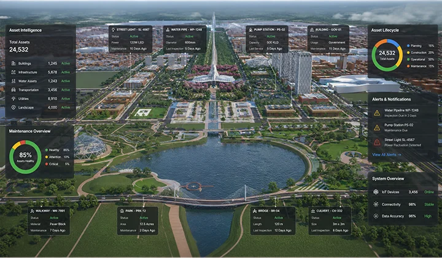

Digital Twin Solutions
A living digital replica of your physical assets — integrating BIM, IoT sensor data, and predictive analytics to enable real-time visibility, simulation, and smarter decisions.
From Static Models to Living Digital Twins
Sentra's Digital Twin solutions bridge the gap between design, construction, and operations — creating dynamic, data-enriched virtual replicas that evolve with your assets in real time.
Intelligent Virtual Replicas for Real-World Assets
A Digital Twin is more than a 3D model — it is a continuously updated digital mirror of a physical asset, building, infrastructure system, or operational process. Unlike static documentation or conventional BIM, a Digital Twin integrates real-world data from IoT sensors, connected systems, and operational records to provide continuous, real-time visibility into asset performance and condition throughout its lifecycle. Sentra builds Digital Twins on a foundation of accurate BIM models, enriched with live sensor streams from structural monitoring, environmental sensors, and operational systems. Our platform enables asset owners to visualise real-time conditions, simulate future scenarios, detect anomalies before they become failures, and make evidence-based decisions that extend asset life and reduce operational costs. From single buildings to city-scale infrastructure networks, our Digital Twin solutions serve the full spectrum of infrastructure intelligence needs.
Centralise asset information from design through operations — bringing together BIM models, equipment specifications, maintenance records, and sensor data in a single, accessible environment.
Connect live sensor data from structural, environmental, and operational monitoring systems directly into the Digital Twin — enabling real-time condition visualisation within the 3D model.
Machine learning models analyse sensor data streams to predict equipment failure, structural deterioration, and energy performance — enabling proactive intervention and reduced downtime.
Optimise building performance through centralised tracking of space utilisation, energy consumption, maintenance coordination, and operational workflows — all within the Digital Twin environment.
Information created during design and construction — BIM models, specifications, commissioning data — is preserved, enriched, and carried forward into operations, eliminating data loss at handover.
For smart city and large infrastructure programmes, we build Digital Twins that integrate multiple assets, utility networks, and public systems into a single geospatial intelligence platform.
Measurable Outcomes
Digital Twins deliver quantifiable improvements in operational efficiency, asset reliability, and decision quality.
Operational Efficiency
Real-time visibilityDowntime Reduction
Predictive maintenanceLifecycle Cost Savings
Data-driven decisionsHow It Works
A structured, scalable process from data capture through to live Digital Twin deployment.


Digital Twin in Action
From smart cities to critical infrastructure — see how Digital Twins transform asset management.


How Digital Twins Help Your Organisation
Digital Twins create value at every stage of the asset lifecycle — from design coordination through 30-year operational management.
Amaravati Integrated Command Control Centre
Sentra implemented a city-scale Digital Twin framework for the capital city development of Andhra Pradesh — synchronising physical infrastructure with live data for city-wide asset intelligence.

The Amaravati Integrated Command Control Centre (AICCC) is a flagship Digital Twin implementation that syncs physical infrastructure across the entire capital city with live IoT data streams. The platform enables 24/7 multi-domain monitoring of utilities, services, drone feeds, and CCTV networks — all visualised within a unified geospatial Digital Twin environment.
- Digital approval workflows and governance
- Land pooling records transparency
- Citizen grievance management platform
- Real-time utility and service dashboards
Industries We Serve
Sentra's Digital Twin solutions serve the full range of sectors where real-time asset intelligence delivers measurable value.
Why Choose Sentra for Digital Twins
Digital Twin in Action
Real-world applications of our Digital Twin technology across infrastructure and smart city projects.


Frequently Asked Questions
Can't find what you're looking for? Contact our team — we're happy to help.
A BIM model is a static digital representation of an asset — capturing geometry, attributes, and relationships as they existed at a point in time. A Digital Twin is a BIM model connected to live data streams from IoT sensors, maintenance systems, and operational records — creating a continuously updated digital representation that mirrors the current real-world state of the physical asset. The Digital Twin enables real-time performance monitoring, anomaly detection, and predictive analytics in the spatial context of the 3D model.
A Digital Twin ingests data from multiple sources — BIM models, IoT sensors (structural, environmental, energy), operational systems (BMS, SCADA, CMMS), and manual inspection records — into a single, accessible environment. The platform processes, visualises, and analyses this data within the spatial context of the 3D model. Users can view real-time conditions, run simulations, receive alerts on anomalies, and generate reports — all from the same interface.
Key benefits include: reduced downtime through real-time anomaly detection and predictive maintenance; improved operational efficiency via optimised resource utilisation and energy management; better capital planning through accurate asset health and lifecycle data; enhanced safety through continuous environmental and structural monitoring; and improved collaboration between design, construction, and operations teams working from a single source of truth.
Yes. For existing assets, we begin with a 3D laser scan or photogrammetric survey to capture the as-built geometry, then convert the point cloud into an accurate BIM model. IoT sensors are then installed to capture operational data. This approach works for any existing building, bridge, plant, or infrastructure asset — providing a complete Digital Twin of your current physical reality without requiring design-stage BIM data.
A standard Digital Twin deployment for a single building or infrastructure asset typically takes 8–16 weeks from initial survey through to live platform. This includes: laser scanning (1–2 days), BIM model creation (2–4 weeks), IoT sensor installation (1–2 weeks), platform configuration and integration (2–4 weeks), and user acceptance testing and training (1 week). City-scale or multi-asset programmes are phased over a longer delivery schedule.
We are platform-agnostic and work with leading Digital Twin platforms including Autodesk Tandem, Bentley iTwin, Azure Digital Twins, and open-source visualisation frameworks. Our IoT integration layer supports standard protocols (MQTT, OPC-UA, Modbus, BACnet) and can connect to any major BMS, SCADA, or CMMS system. We recommend the platform that best suits your specific requirements, existing technology stack, and budget.